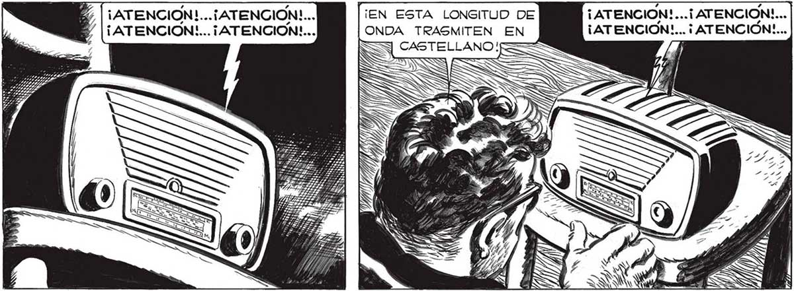
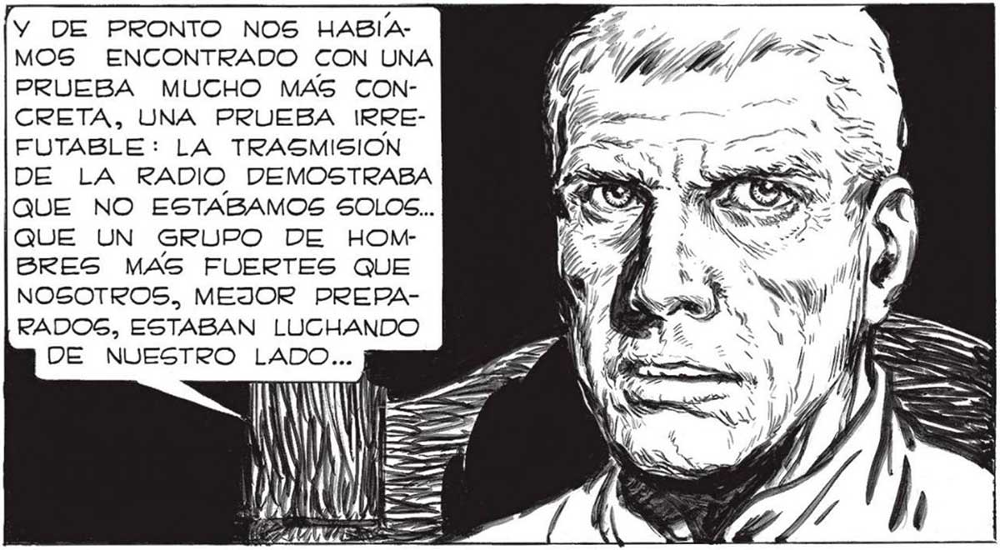

¡EN ESTA LONGITUD DE ONDA TRASMITEN EN ¡ATENCION!...¡ATENCION!... ¡ ATENCION!... ¡ATENCION!... ¿SERÁ POSIBLE, FAVA, QUE ALLA ARRIBA, EN EL NORTE, ESTEN YA TAN ORGANIZADOS COMO Par R UN LLAMADO A TODO EL MUNDO ? RA HU A | INESIS Monotona, SIEMPRE IGUAL, EL REMOTO LOCUTOR SEGUIA REPITIENDO SIEMPRE LA MISMA PALABRA... sl E: OPARLANTE x / ERA BIEN COMPRENSIBLE AQUELLA ESPERANZA QUE TAN DESESPERADAMENTE TRATABAMOS , DE DISIMULAR. HASTA AHORA, LAG ÚNICAS , PRUEBAS QUE TENÍAMOS DE QUE EN ALGÚN OTRO LUGAR HABIA UNA RESISTENCIA ORGANIZADA CONTRA EL INQuizx Por PRIMERA VEZ SE ADIVINABA UNA GRAN ESPE- | RANZA, UNA ALEGRIA LOCA QUE TRATABAN DE DISIMULAR PARA NO ILUSIONARSE A SÍ MISMOS. ERAN TANTAS LAS VECES QUE NOS HABIAMOS ESPERANZADO PARA CAER EN SEGUIDA EN EL MAS CRUEL DE LOS DESENGAÑNOS... ¡ ATENCION!...¡ ATENCION!... ¡ATENCION!... ¡ ATENCIÓN!... Sí, JUAN... NO HAY OTRA EXPLICACION...NO DEBES DE OLVIDAR QUE ALLA HAN CONTADO SIEMPRE CON MEDIOS TÉCNICOS MUY SUPERIORES A LOS DEL RESTO DEL MUNDO..ES EVIDENTE QUE ESTAN TRATANDO DE LANZAR ES UN MENSAJE EN ESCALA MUNDIAL... GIGUIO VIBRANDO LA MISMA PALABRA... ¡ATENCIÓN!... ¡ATENCION!... ¡ATENCION!... ¡ATENCIÓN!... ¡ATENCIÓN!... Y DE PRONTO NOS HABIAMOS ENCONTRADO CON UNA PRUEBA MUCHO MAS CONCRETA, UNA PRUEBA IRREFUTABLE: LA TRASMISION DE LA RADIO DEMOSTRABA QUE NO ESTABAMOS SOLOS... QUE UN GRUPO DE HOMBRES MAS FUERTES QUE NOSOTROS, MEJOR PREPARADOS, ESTABAN LUCHANDO DE NUESTRO LADO... NIE IN | Ñ Ú | ÚÚN MY ENE == (ATENCION!... ¡ ATENCIÓN!... ¡ATENCION!... ¡ ATENCIÓN! ... NWE l ! 1 ESTÁN TRASMITIENDO 319 PARA ESTE LADO DEL MUNDO... ¡ ATENCIÓN! ... ¡ATENCION!... ¡ATENCION!... ¡ATENCION!... Miré De rReO0JO A MIS COMPAÑEROS. TODOS TENIAN UNA EXPRESION NUEVA... ¿se Pe ¿BPE Os YN VPOGBHR ON VA a olla > XA == == e ss a

